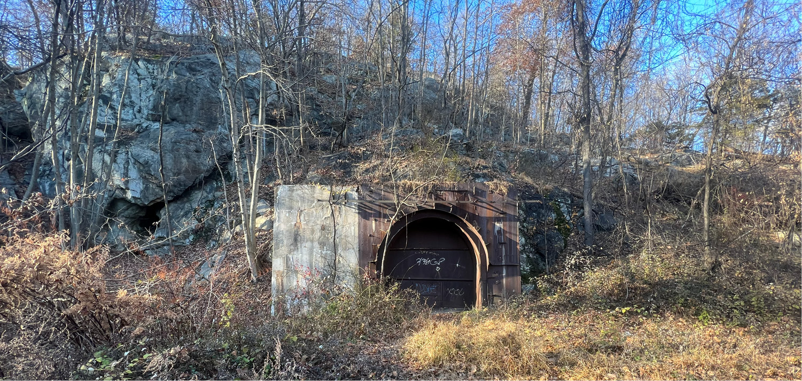
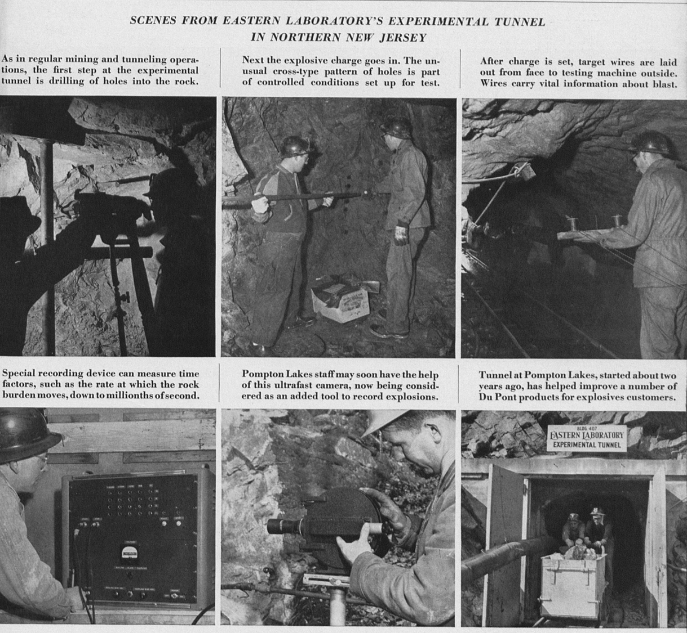

63
This hulking extrusion jutting out from the rocky terrain is DuPont’s Cladding Tunnel, the only extant structure at the Fuze Works to get its own AOC, #108. Follow the path up and around to its entrance. Used for experiments in bonding metals together, researchers would detonate explosives produced at the plant in their attempts to force materials into each other. The enormous hole in front of you, welded shut many times over, was not created in service of irrigation or transportation, but in the blind pursuit of innovation. The exposed bedrock around it extends hundreds of feet up the ridge, but still manages to feel volumetrically insignificant in comparison to the tunnel.

Opposite:
Photos from DuPont Magazine article “School of hard rocks.” The article features the quote, “Actually, the tunnel that’s being blasted out is going nowhere, just farther and farther into the massive hill,”
(page 30).
64
